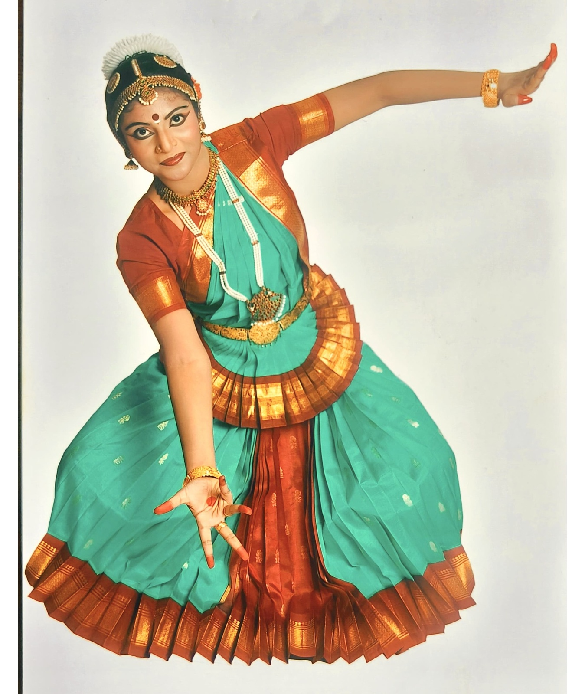

Performance Arts
Stage performances, site-specific works, and collaborative creations.
Hi! I am Shrija. I am a researcher, educator and artist, with a specialisation in spatio-cultural studies and performance arts. I like to learn about ecology and landscapes and how cultural systems are built around them and societies are shaped. In brief, I study, Human-Nature-Culture interface. My focus is on conservation and awareness and bridging the gap between society and ecology through art. To pursue my interests, I did my PhD in Humanities and Social Sciences after completing my Bachelors and Master’s degree in Literature and Culture Studies.
I started learning Bharatanatyam when I was four years old under the Guru Shishya Parampara. The dance form intrigued me because of its complexity, logic and beauty. In a highly competitive and challenging world, Bharatanatyam has helped me stay grounded, develop a positive mindset, and be empathetic.
I enjoy connecting with people and sharing ideas or working collaboratively. I am enthusiastic about conducting workshops, lectures and events, to build strong relationships and communities.Today, I teach university students and working professionals as a faculty, and independently work on my creative projects. I share my experiences on social media through audio-visual content and occasionally through a haiku!
Stage performances, site-specific works, and collaborative creations.

Talks and participatory workshops for institutions, festivals, and communities.

Advisory on arts research, documentation, and methodologies.

Voice acting, storytelling, and experimental vocal performances.
A brief abstract or teaser for the article goes here.
Short description of the article or blog entry.